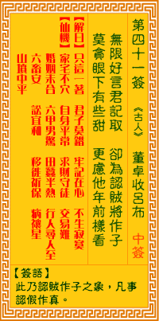

观音灵签第四十一签 【董卓收吕布】 |
 | |||
无限好事君须记 恰如认贼作为子 莫贪眼下有些甜 可虑他时还受苦 |
||||
| 【吉凶】 | 下下签 | 【宫位】 | 酉宫 | |
| 【签语】 | 此卦认贼做子之象，凡事认假作真也。 | |||
| 【解曰】 | 只这一着 君子莫错 牢记在心 不生寂寞 | |||
| 【仙机】 | 此签家宅不安，自身平常，求财守待，交易难，婚姻未合，行人寻人至，六甲男惊，田蚕半熟，六畜安，讼宜和，移徙祈保，病禳星，山 坟中平。 | |||
| 【详解】 | 事事无绝对的道理你必须要谨记，就好像目前认贼人为子一样;不要只看到眼前的利益就急着贪求，岂知日后还得要担忧受苦。 只道一着，君子莫错，宰把身心，不致耽搁。此签认贼为子之象，凡事不宜苟且。 本签示于弟子曰。认贼为子之象。不宜苟且者。神戒之曰。莫贪眼下有些甜头。趋之。后果堪虞。到头来还是受苦者。功名。交易。尚不理想。求财皆在待时之命运。为认贼作子之时。易言之。只道一着君子莫错宰把身心不致耽搁。 此签有”贪多必失”之意。奉劝当事人，凡事要懂得节制。对于目前所拥有的，应知好好珍惜、谨慎运用。牢牢把持身心，勿让欲望无止尽的扩大。当知满足现状，切忌还想要更多更多。行事勿过于骄纵奢华，勿沈迷于酒色财气之中。否则纵有金山银山，转眼也会成空。不要妄想把全部的东西都想要占为己有。不属于自己的物事，不必强求。 | |||
| 【典故】 | 董卓是东汉末年的大军阀，他残忍暴戾，独断独横，杀人不眨眼。到了长安，又搜刮民财，强取豪夺，令人民愤怒。吕布是个骁勇异常的 年轻人，但没有品德，有勇无谋。董卓以一匹良马和许多金钱收买了吕布归顺，后来又认吕布为义子。吕布在凤仪亭调戏董卓爱妾貂禅，导致二人结怨，董卓终被吕布所杀。《三国演义》故事 | |||